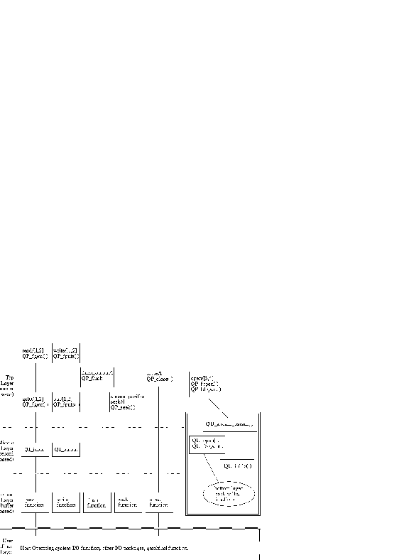

There are three layers of input/output operations visible in the Prolog system as illustrated in the figure "Input/Output Model".
The top layer is character based.
It supports reading a character, writing a character
and testing the state of a Prolog stream. get0/[1,2] and
put/[1,2] are examples of the first layer operation.
The middle layer is record based. Its primary function is to keep the integrity of a record, through such operations as trimming a record, padding a record and handling output overflow. This layer is not visible to the user and cannot be changed by the user.
The bottom layer is buffer based. It performs the actual input from or output to the underlying device of a Prolog stream. The bottom layer is a collection of five functions associated with a stream: read, write, flush, seek and close functions. Typically the read function reads data from the underlying device into a buffer that it maintains and then passes this data up to the middle layer a record at a time. The write function provides buffer space for a record to be received from the middle layer and writes out the buffer to the underlying device.
The embedding open function QU_open() assigns the appropriate
bottom layer functions for a stream created by open/[3,4].
A user-defined Prolog stream must supply its own bottom layer functions
for the stream.
Bottom layer functions are described in fli-ios-bot.

Writing to a QP_DELIM_LF record
file stream demonstrates how the three layers work together.
Each put/2 call on the stream simply stores a character
in the record buffer of the stream.
When the top layer predicate, nl/1, is called on the stream, the middle layer output function is
called.
The middle layer function stores a <LFD> in the record buffer
and updates some counters for the stream. It then calls the bottom layer
function of the stream. The bottom layer writes out the record to the output
file.
Please note: In addition, the top layer contains predicates and C functions to perform seek, flush output and close operations on a stream. There are no middle layer functions for these operations.